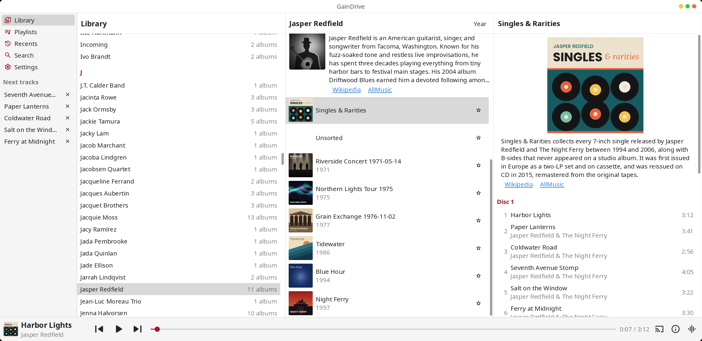

Connects to your GainDrive server (or any other Subsonic-compatible one) and plays your audio and video collection on your Linux desktop.

Packages are built for Ubuntu 24.04, on x86_64 (amd64) and ARM (arm64).
Grab the .deb for your architecture from the latest release, then install it with apt.
sudo apt install ./gaindrive-player-*.deb